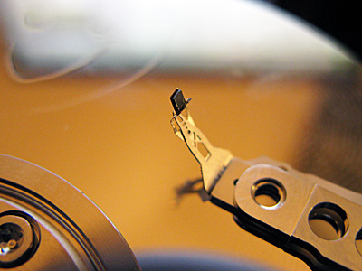
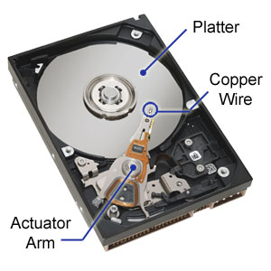
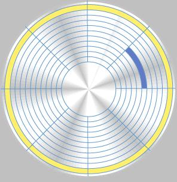

How does HDD works?

The average laptop in the shops for around $500 has somewhere in the region of 60GB of memory. You see that figure and think ‘wow – imagine all the movies, songs, images, files and documents I could save on that baby’, right?
But did you ever think about how it actually gets stored?
If you were to stack the equivalent capacity of CDs in front of you it would surely rise to eye-level. You can fit everything on those CDs onto that hard drive. Truly amazing for an invention that has its origins in the 1950’s and was first developed as a humble cassette tape.
Next we have the arm. This writes and reads data onto the disc. It stretches out over the platter and moves over it from centre to edge reading and writing data to the platter through its tiny heads which hover just over the platter. The arm, on the average domestic drives can oscillate around 50 times per second. On many high-spec machines and those used for complex calculations this figure can rise into the thousands.
Hard drives use magnetism to store information just like on old cassette tapes. For that reason, copper heads are used as they are easy to magnetise and demagnetise using electricity.
For this reason, platters are separated into different sectors and tracks. The tracks are the long circular divisions highlighted here in yellow. They are like “˜tracks’ on music records. Then we have the different sectors which are small sections of tracks. There are thousands of these from centre to edge of the platter. One is highlighted blue in the picture.
Let’s say you edited the image. Well now those changes must be saved. When you click “˜Save‘, all of that information is shot to the CPU which in turn sorts it (processes it) and sends it to the hard drive for storage. The hard drive will spin up and the arm will use its “˜write‘ heads to overwrite the previous image with the new one. Job done.
That is what that buzzing disc in your computer gets up to all day. Now, as I do with most of my articles here on MUO I shall leave you with a friendly word of advice:
If you want to look inside to further understand how does hard drive work, do so with an old one. There are a few reasons for this.
But did you ever think about how it actually gets stored?
If you were to stack the equivalent capacity of CDs in front of you it would surely rise to eye-level. You can fit everything on those CDs onto that hard drive. Truly amazing for an invention that has its origins in the 1950’s and was first developed as a humble cassette tape.
How Does a Hard Drive Work – The Basics
 In order to fully understand a hard drive you have to know how one works physically. Basically, there are discs, one on top of the other spaced a few millimetres apart. These discs are called platters. Polished to a high mirror shine and incredibly smooth they can hold vast amounts of data.Next we have the arm. This writes and reads data onto the disc. It stretches out over the platter and moves over it from centre to edge reading and writing data to the platter through its tiny heads which hover just over the platter. The arm, on the average domestic drives can oscillate around 50 times per second. On many high-spec machines and those used for complex calculations this figure can rise into the thousands.
Hard drives use magnetism to store information just like on old cassette tapes. For that reason, copper heads are used as they are easy to magnetise and demagnetise using electricity.
Storage and Operation
 When you save a file, the “˜write’ head on the arm writes the data onto the platter as it spins at high RPM often in the region of 4,000. However, it doesn’t just go anywhere as the computer must be able to locate the file later. It also must not interfere or indeed delete any other information already on the drive.For this reason, platters are separated into different sectors and tracks. The tracks are the long circular divisions highlighted here in yellow. They are like “˜tracks’ on music records. Then we have the different sectors which are small sections of tracks. There are thousands of these from centre to edge of the platter. One is highlighted blue in the picture.
In Operation
When you open a file, program or really anything on your PC, the hard drive must find it. So let’s say that you open an image. The CPU will tell the hard drive what you’re looking for. The hard drive will spin extremely fast and it will find the image in a nano-second. It will then “˜read’ the image and send it to the CPU. The time it takes to do this is called the “˜read time’. Then the CPU takes over and sends the image on its way to your screen.Let’s say you edited the image. Well now those changes must be saved. When you click “˜Save‘, all of that information is shot to the CPU which in turn sorts it (processes it) and sends it to the hard drive for storage. The hard drive will spin up and the arm will use its “˜write‘ heads to overwrite the previous image with the new one. Job done.
That is what that buzzing disc in your computer gets up to all day. Now, as I do with most of my articles here on MUO I shall leave you with a friendly word of advice:
If you want to look inside to further understand how does hard drive work, do so with an old one. There are a few reasons for this.
- Remember when you were a kid and you pulled apart that roll of film with all aunt Lucy’s wedding snaps on it? Well exposing a hard drive to light will damage it and render it as useless as that roll of film.
- Once you pop open that drive, plugs on the screws will snap to tell the manufacturer you have been poking around in there. By doing this, your warranty is void immediately. Many drives actually have this warning printed on the side.
- They’re expensive and carry a lot of important info so don’t just pop open the family PC to have a go at it. Pick up an old one on eBay.